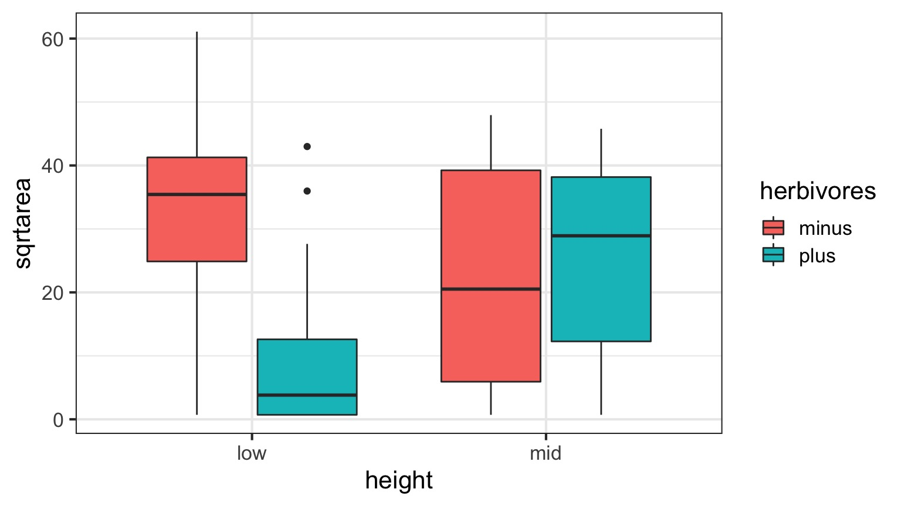
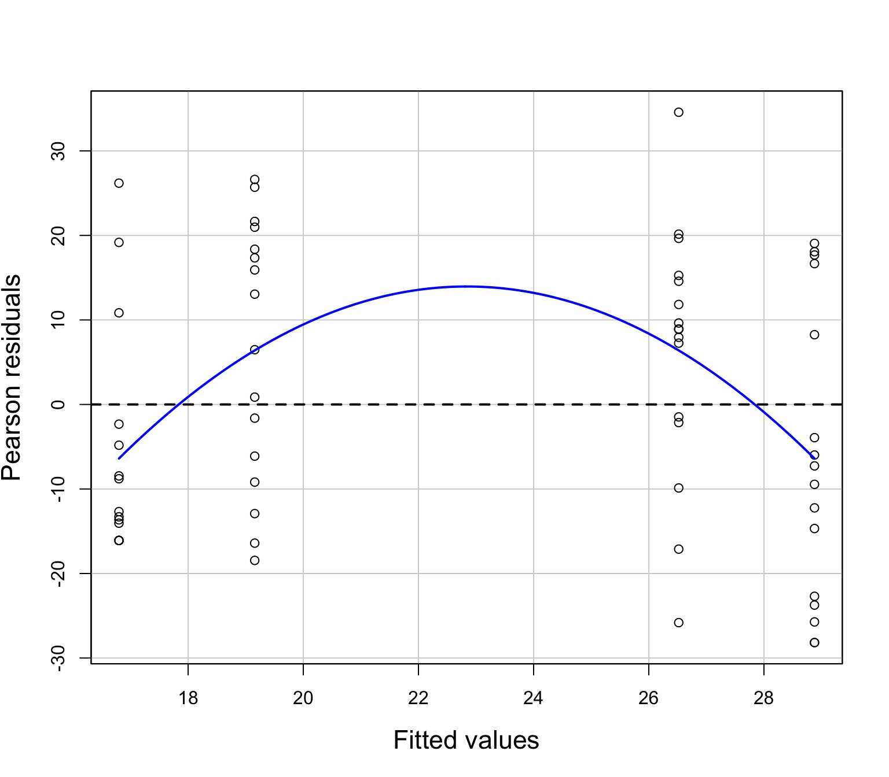
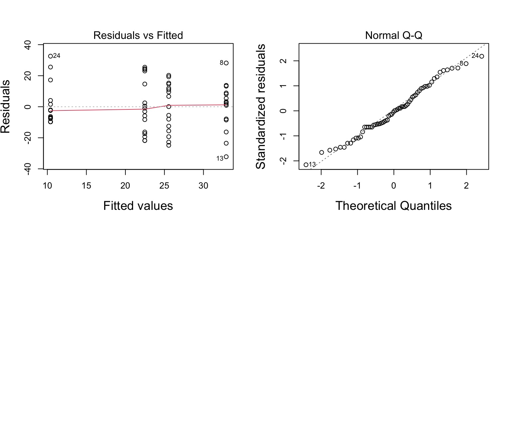
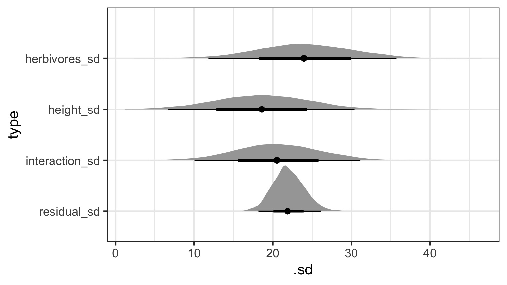

Factorial Designs & Interaction Effects

Outline
- Factorial ANOVA
- Posthocs
- Unbalanced Designs
Is the world additive?
- Until now, we have assumed factors combine additively
- BUT - what if the effect of one factor depends on another?
- This is an INTERACTION and is quite common
- Yet, challenging to think about, and visualize
Intertidal Grazing!

Do grazers reduce algal cover in the intertidal?
Experiment Replicated on Two Ends of a gradient

What happens if you fit this data using * instead of + in the linear model?
The Data
Humdrum Linear Model
sqrtarea ~ height + herbivores
| Sum Sq | Df | F value | Pr(>F) | |
|---|---|---|---|---|
| height | 88.97334 | 1 | 0.3213845 | 0.5728570 |
| herbivores | 1512.18349 | 1 | 5.4622243 | 0.0227309 |
| Residuals | 16887.47793 | 61 | NA | NA |
Residuals Look Weird
Group Residuals Look Odd

Pattern in Fitted v. Residuals

Nonlinearity seen in the Tukey Test!
Test stat Pr(>|Test stat|)
height
herbivores
Tukey test -3.3171 0.0009097 ***
---
Signif. codes: 0 '***' 0.001 '**' 0.01 '*' 0.05 '.' 0.1 ' ' 1| Test stat | Pr(>|Test stat|) | |
|---|---|---|
| height | NA | NA |
| herbivores | NA | NA |
| Tukey test | -3.317064 | 0.0009097 |
(Note: This test is typically used when there is no replication within blocks)
Factorial Blocked Experiment

Factorial Design

Note: You can have as many treatment types as you want (and then 3-way, 4-way, etc. interactions)
Problem: Categorical Predictors are Not Additive!
You can only see this if you have replication of treatments (grazing) within blocks (tide height)
The Model For a Factorial ANOVA/ANODEV
\[y_{ijk} = \beta_{0} + \sum \beta_{i}x_{i} + \sum \beta_{j}x_{j} + \sum \beta_{ij}x_{ij} + \epsilon_{ijk}\]
\[\epsilon_{ijk} \sim N(0, \sigma^{2} ), \qquad x_{i} = 0,1\]
- Note the new last term
- Deviation due to treatment combination
The General Linear Model
\[\boldsymbol{Y} = \boldsymbol{\beta X} + \boldsymbol{\epsilon}\]
- \(\boldsymbol X\) can have Nonlinear predictors
- e.g., It can encompass A, B, and A*B
How do you Fit an Interaction Effect?
No More Pattern in Fitted v. Residuals
Other Assumptions are Met

F-Tests for Interactions
\(SS_{Total} = SS_{A} + SS_{B} + SS_{AB} +SS_{Error}\)\(SS_{AB} = n\sum_{i}\sum_{j}(\bar{Y_{ij}} - \bar{Y_{i}}- \bar{Y_{j}} - \bar{Y})^{2}\), df=(i-1)(j-1)
MS = SS/DF, e.g, \(MS_{W} = \frac{SS_{W}}{n-k}\)
\(F = \frac{MS_{AB}}{MS_{Error}}\) with DF=(j-1)(k-1),n - 1 - (i-1) - (j-1) - (i-1)(j-1)
ANOVA shows an Interaction Effect
| Sum Sq | Df | F value | Pr(>F) | |
|---|---|---|---|---|
| height | 88.97334 | 1 | 0.3740858 | 0.5430962 |
| herbivores | 1512.18349 | 1 | 6.3579319 | 0.0143595 |
| height:herbivores | 2616.95555 | 1 | 11.0029142 | 0.0015486 |
| Residuals | 14270.52238 | 60 | NA | NA |
What does the Interaction Coefficient Mean?
What does the Interaction Coefficient Mean?
| Estimate | Std. Error | t value | Pr(>|t|) | |
|---|---|---|---|---|
| heightlow | 32.91450 | 3.855532 | 8.536955 | 0.0000000 |
| heightmid | 22.48360 | 3.855532 | 5.831516 | 0.0000002 |
| herbivoresplus | -22.51075 | 5.452546 | -4.128484 | 0.0001146 |
| heightmid:herbivoresplus | 25.57809 | 7.711064 | 3.317064 | 0.0015486 |
Outline
- Factorial ANOVA
- Posthocs
- Unbalanced Designs
Post-hoc Tests!

Posthocs and Factorial Designs
Must look at simple effects first
- The effects of individual treatment combinations
Main effects describe effects of one variable in the complete absence of the other
- Useful only if one treatment CAN be absent
Posthoc Comparisons Within Blocks
contrast estimate SE df t.ratio p.value
minus - plus 9.721701 3.855532 60 2.521 0.0144
Results are averaged over the levels of: height Posthoc Comparisons of Blocks
contrast estimate SE df t.ratio p.value
low - mid -2.358142 3.855532 60 -0.612 0.5431
Results are averaged over the levels of: herbivores Posthoc with Simple Effects Model
contrast estimate SE df t.ratio p.value
low,minus - mid,minus 10.430905 5.452546 60 1.913 0.0605
low,minus - low,plus 22.510748 5.452546 60 4.128 0.0001
low,minus - mid,plus 7.363559 5.452546 60 1.350 0.1819
mid,minus - low,plus 12.079843 5.452546 60 2.215 0.0305
mid,minus - mid,plus -3.067346 5.452546 60 -0.563 0.5758
low,plus - mid,plus -15.147189 5.452546 60 -2.778 0.0073Posthoc with Simple Effects Model

We are often interested in something simpler…
Simpler VIsualization of an Interaction Effect
Outline
- Factorial ANOVA
- Posthocs
- Unbalanced Designs
Oh no! I lost a replicate (or two)
Type of Sums of Squares Matters
Type I
| Df | Sum Sq | Mean Sq | F value | Pr(>F) | |
|---|---|---|---|---|---|
| height | 1 | 151.8377 | 151.8377 | 0.6380017 | 0.4278712 |
| herbivores | 1 | 1384.0999 | 1384.0999 | 5.8158020 | 0.0192485 |
| height:herbivores | 1 | 2933.5934 | 2933.5934 | 12.3265653 | 0.0008998 |
| Residuals | 55 | 13089.4237 | 237.9895 | NA | NA |
Type II
| Sum Sq | Df | F value | Pr(>F) | |
|---|---|---|---|---|
| height | 77.87253 | 1 | 0.3272099 | 0.5696373 |
| herbivores | 1384.09995 | 1 | 5.8158020 | 0.0192485 |
| height:herbivores | 2933.59337 | 1 | 12.3265653 | 0.0008998 |
| Residuals | 13089.42369 | 55 | NA | NA |
Enter Type III
| Sum Sq | Df | F value | Pr(>F) | |
|---|---|---|---|---|
| (Intercept) | 14188.804 | 1 | 59.619447 | 0.0000000 |
| height | 1175.967 | 1 | 4.941256 | 0.0303521 |
| herbivores | 4242.424 | 1 | 17.826097 | 0.0000915 |
| height:herbivores | 2933.593 | 1 | 12.326565 | 0.0008998 |
| Residuals | 13089.424 | 55 | NA | NA |
Compare to type II
| Sum Sq | Df | F value | Pr(>F) | |
|---|---|---|---|---|
| height | 77.87253 | 1 | 0.3272099 | 0.5696373 |
| herbivores | 1384.09995 | 1 | 5.8158020 | 0.0192485 |
| height:herbivores | 2933.59337 | 1 | 12.3265653 | 0.0008998 |
| Residuals | 13089.42369 | 55 | NA | NA |
What’s Going On: Type I, II, and III Sums of Squares
Type I Sums of Squares:
SS for A calculated from a model with A + Intercept versus just Intercept
SS for B calculated from a model with A + B + Intercept versus A + Intercept
SS for A:B calculated from a model with A + B + A:B +Intercept versus A + B + Intercept
This is fine for a balanced design. Variation evenly partitioned.
What’s Going On: Type I, II, and III Sums of Squares
Type II Sums of Squares:
SS for A calculated from a model with A + B + Intercept versus B + Intercept
SS for B calculated from a model with A + B + Intercept versus A + Intercept
SS for A:B calculated from a model with A + B + A:B +Intercept versus A + B + Intercept
Interaction not incorporated in assessing main effects
What’s Going On: Type I, II, and III Sums of Squares
Type III Sums of Squares:
SS for A calculated from a model with A + B + A:B + Intercept versus B + A:B + Intercept
SS for B calculated from a model with A + B + A:B + Intercept versus A + A:B + Intercept
SS for A:B calculated from a model with A + B + A:B +Intercept versus A + B + Intercept
Each SS is the unique contribution of a treatment
very conservative
What’s Going On: Type I and II Sums of Squares
| Type I | Type II | ||
| Test for A | A v. 1 | A + B v. B | A + B + A:B v B + A:B |
| Test for B | A + B v. A | A + B v. A | A + B + A:B v A + A:B |
| Test for B | A + B v. A | A + B v. A | A + B + A:B v A + B |
Which SS to Use?
- Traditionally, urged to use Type III
- What do type III models mean?
- A + B + A:B v. B + A:B
- A + B + A:B v. B + A:B
- Interactions the same for all, and if A:B is real, main effects not important
- Type III has lower power for main effects
- Type II produces more meaningful results if main effects are a concern - which they are!
Non-Least Squares Approaches
Variance Paritioning Gets More Interesting!

Many Treatments